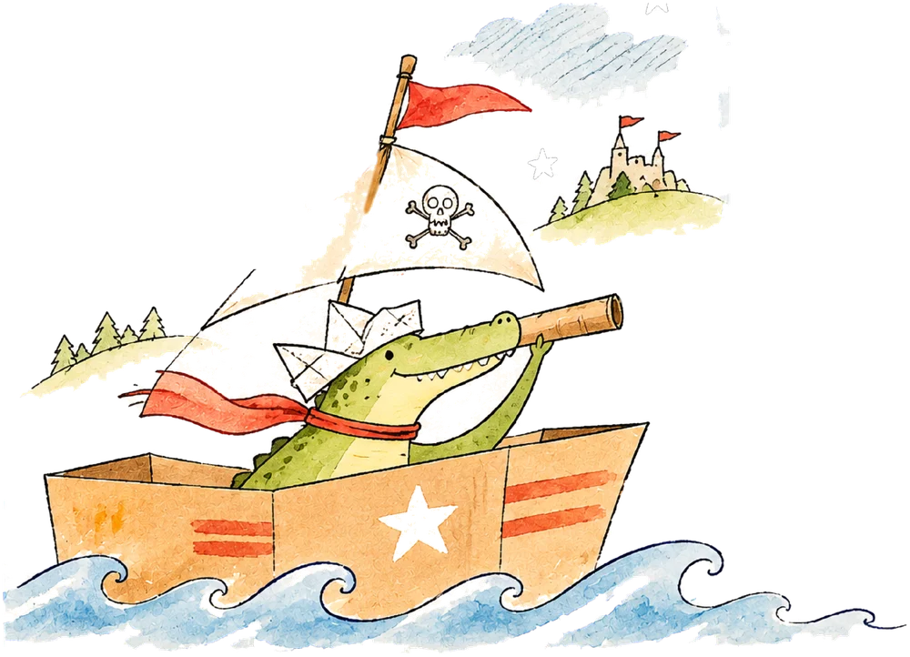

1
Children imagine with what they know
A cardboard box in our living room became a pirate ship last weekend.
The idea didn’t come from nowhere. It was a mix of stories we’ve read, boats we’ve seen, and our own ideas about what a real ship might be like.
Researchers tell us
Children’s imagination is often more rooted in reality than adults assume. They draw on their experiences and memories to create new possibilities.
Pretend play is linked to thinking about alternatives: for example, imagining how things might have been different.
From around age three, children become increasingly able to tell the difference between what is real and what is imagined.
Sources
- Harris, P. L. (2021). Early constraints on the imagination: The realism of young children. Child Development, 92, 466–483.
- Francis, G. A. & Gibson, J. L. (2023). A plausible role of imagination in pretend play, counterfactual reasoning, and executive functions. British Journal of Psychology, 114(3), 749–770.
- Sharon, T. & Woolley, J. D. (2004). Do monsters dream? Young children’s understanding of the fantasy/reality distinction. British Journal of Developmental Psychology, 22, 293–310.

The more there is to discover, the more there is to imagine.